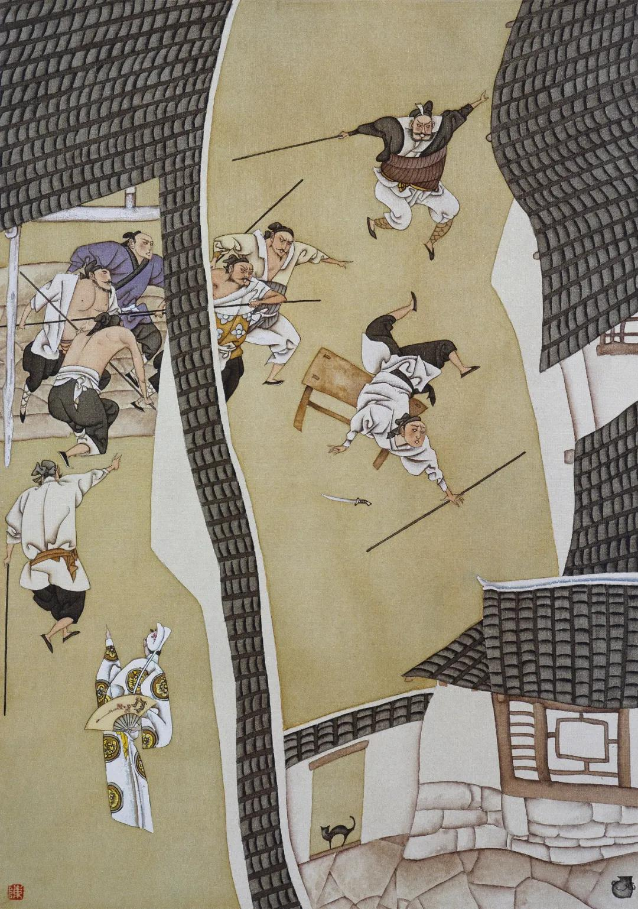

第二十六回 来旺儿递解徐州 宋蕙莲含羞自缢
第二十六回 来旺儿递解徐州 宋蕙莲含羞自缢#
诗曰：
与君形影分吴越，玉枕经年对离别。登台北望烟雨深，回身哭向天边月。
又：
夜深闷到戟门边，却绕行廊又独眠。闺中只是空相忆，魂归漠漠魄归泉。
话说西门庆听了金莲之言，又变了卦。到次日，那来旺儿收拾行李伺候，到日中还不见动静。只见西门庆出来，叫来旺儿到跟前说道：“我夜间想来，你才打杭州来家多少时儿，又教你往东京去，忒辛苦了，不如叫来保替你去罢。你且在家歇宿几日，我到明日，家门首生意寻一个与你做罢。”自古物听主裁，那来旺儿那里敢说甚的，只得应诺下来。西门庆就把银两书信，交付与来保和吴主管，三月念八日起身往东京去了。不在话下。
这来旺儿回到房中，心中大怒，吃酒醉倒房中，口内胡说，怒起宋蕙莲来，要杀西门庆。被宋蕙莲骂了他几句：“你咬人的狗儿不露齿，是言不是语，墙有缝，壁有耳。吃了那黄汤，挺那两觉。”打发他上床睡了。到次日，走到后边，串玉箫房里请出西门庆。两个在厨房后墙底下僻静处说话，玉箫在后门首替他观风。婆娘甚是埋怨，说道：“你是个人？你原说教他去，怎么转了靶子，又教别人去？你干净是个毬子心肠──滚上滚下，灯草拐棒儿──原拄不定把。你到明日盖个庙儿，立起个旗杆来，就是个谎神爷！我再不信你说话了。我那等和你说了一场，就没些情分儿！”西门庆笑道：“到不是此说。我不是也叫他去，恐怕他东京蔡太师府中不熟，所以教来保去了。留下他，家门首寻个买卖与他做罢！”妇人道：“你对我说，寻个甚么买卖与他做？”西门庆道：“我教他搭个主管，在家门首开酒店。”妇人听言满心欢喜，走到屋里一五一十对来旺儿说了，单等西门庆示下。
一日，西门庆在前厅坐下，着人叫来旺儿近前，桌上放下六包银两，说道：“孩儿！你一向杭州来家辛苦。教你往东京去，恐怕你蔡府中不十分熟，所以教来保去了。今日这六包银子三百两，你拿去搭上个主管，在家门首开酒店，月间寻些利息孝顺我，也是好处。”那来旺连忙趴在地下磕头，领了六包银两。回到房中，告与老婆说：“他倒拿买卖来窝盘我，今日与了我这三百两银子，教我搭主管，开酒店做买卖。”老婆道：“怪贼黑囚！你还嗔老婆说。一锹就掘了井？也等慢慢来。如何今日也做上买卖了！你安分守己，休再吃了酒，口里六说白道！”来旺儿叫老婆把银两收在箱中：“我在街上寻伙计去也！”于是走到街上寻主管。寻到天晚，主管也不成，又吃的大醉来家。老婆打发他睡了，就被玉箫走来，叫到后边去了。

来旺儿睡了一觉，约一更天气，酒还未醒，正朦朦胧胧睡着，忽听的窗外隐隐有人叫他道：“来旺哥！还不起来看看，你的媳妇子又被那没廉耻的勾引到花园后边，干那营生去了。亏你倒睡的放心！”来旺儿猛可惊醒，睁开眼看看，不见老婆在房里，只认是雪娥看见甚动静来递信与他，不觉怒从心上起，道：“我在面前就弄鬼儿！”忙跳起身来，开了房门，迳扑到花园中来。刚到厢房中角门首，不防黑影里抛出一条凳子来，把来旺儿绊了一交，只见响亮一声，一把刀子落地。左右闪过四五个小厮，大叫：“有贼！”一齐向前，把来旺儿一把捉住了。来旺儿道：“我是来旺儿，进来寻媳妇子，如何把我拿住了？”众人不由分说，一步一棍，打到厅上。只见大厅上灯烛荧煌，西门庆坐在上面，即叫：“拿上来！”来旺儿跪在地下，说道：“小的睡醒了，不见媳妇在房里，进来寻他。如何把小的做贼拿？”那来兴儿就把刀子放在面前，与西门庆看。西门庆大怒，骂道：“众生好度人难度，这厮真是个杀人贼！我倒见你杭州来家，叫你领三百两银子做买卖，如何夤夜进内来要杀我？不然拿这刀子做甚么？”喝令左右：“与我押到他房中，取我那三百两银子来！”众小厮随即押到房中。蕙莲正在后边同玉箫说话，忽闻此信，忙跑到房里。看见了，放声大哭，说道：“你好好吃了酒睡罢，平白又来寻我做甚么？只当暗中了人的拖刀之计。”一面开箱子，取出六包银子来，拿到厅上。西门庆灯下打开观看，内中止有一包银两，余者都是锡铅锭子。西门庆大怒，因问：“如何抵换了！我的银两往那里去了？趁早实说！”那来旺儿哭道：“爹抬举小的做买卖，小的怎敢欺心抵换银两？”西门庆道：“你打下刀子，还要杀我。刀子现在，还要支吾甚么？”因把来兴儿叫来，面前跪下，执证说：“你从某日，没曾在外对众发言要杀爹，嗔爹不与你买卖做？”这来旺儿只是叹气，张开口儿合不的。西门庆道：“既赃证刀杖明白，叫小厮与我拴锁在门房内。明日写状子，送到提刑所去！”只见宋蕙莲云鬟撩乱，衣裙不整，走来厅上向西门庆跪下，说道：“爹，此是你干的营生！他好好进来寻我，怎把他当贼拿了？你的六包银子，我收着，原封儿不动，平白怎的抵换了？恁活埋人，也要天理。他为甚么？你只因他甚么？打与他一顿。如今拉着送他那里去？”西门庆见了他，回嗔作喜道：“媳妇儿，关你甚事？你起来。他无礼胆大不是一日，见藏着刀子要杀我，你不得知道。你自安心，没你之事。”因令来安儿：“好搀扶你嫂子回房去，休要慌吓他。”那蕙莲只顾跪着不起来，说：“爹好狠心！你不看僧面看佛面，我恁说着，你就不依依儿？他虽故吃酒，并无此事。”缠得西门庆急了，教来安儿［扌刍］他起来，劝他回房去了。
到天明，西门庆写了柬帖，叫来兴儿做干证，揣着状子，押着来旺儿往提刑院去，说某日酒醉，持刀夤夜杀害家主，又抵换银两等情。才待出门，只见吴月娘走到前厅，向西门庆再三将言劝解，说道：“奴才无礼，家中处分他便了。又要拉出去，惊官动府做甚么？”西门庆听言，圆睁二目，喝道：“你妇人家，不晓道理！奴才安心要杀我，你倒还教饶他罢！”于是不听月娘之言，喝令左右把来旺儿押送提刑院去了。月娘当下羞赧而退，回到后边，向玉楼众人说道：“如今这屋里乱世为王，九尾狐狸精出世。不知听信了甚么人言语，平白把小厮弄出去了。你就赖他做贼，万物也要个着实才好，拿纸棺材糊人，成何道理？恁没道理昏君行货！”宋蕙莲跪在当面哭泣。月娘道：“孩儿你起来，不消哭。你汉子恒数问不的他死罪。贼强人，他吃了迷魂汤了，俺们说话不中听，老婆当军──充数儿罢了。”玉楼向蕙莲道：“你爹正在个气头上，待后慢慢的俺每再劝他。你安心回房去罢。”按下这里不提。
单表来旺儿押到提刑院，西门庆先差玳安送了一百石白米与夏提刑、贺千户。二人受了礼物，然后坐厅。来兴儿递上呈状，看了，已知来旺儿先因领银做买卖，见财起意，抵换银两，恐家主查算，夤夜持刀突入后厅，谋杀家主等情。心中大怒，把来旺叫到当厅跪下。这来旺儿告道：“望天官爷察情！容小的说，小的便说；不容小的说，小的不敢说。”夏提刑道：“你这厮！见获赃证明白，勿得推调，从实与我说来，免我动刑。”来旺儿悉把西门庆初时令某人将蓝缎子，怎的调戏他媳妇儿宋氏成奸，如今故入此罪，要垫害图霸妻子一节，诉说一遍。夏提刑大喝了一声，令左右打嘴巴，说：“你这奴才欺心背主！你这媳妇也是你家主娶的配与你为妻，又把资本与你做买卖，你不思报本，却倚醉夤夜突入卧房，持刀杀害。满天下人都象你这奴才，也不敢使人了。”来旺儿口还叫冤屈，被夏提刑叫过来兴儿过来执证。那来旺儿有口说不得了。正是：
会施天上计，难免目前灾。
夏提刑即令左右选大夹棍上来，把来旺儿夹了一夹，打了二十大棍，打的皮开肉绽，鲜血淋漓。吩咐狱卒，带下去收监。来兴儿、钺安儿来家，回覆了西门庆话。西门庆满心欢喜，吩咐家中小厮：“铺盖、饭食，一些都不许与他送进去。但打了，休来家对你嫂子说，只说衙门中一下儿也没打他，监几日便放出来。”众小厮应诺了。
这宋蕙莲自从拿了来旺儿去，头也不梳，脸也不洗，黄着脸儿，只是关闭房门哭泣，茶饭不吃。西门庆慌了，使玉箫并贲四娘子儿再三进房解劝他，说道：“你放心，爹因他吃酒狂言，监他几日，耐他性儿，不久也放他出来。”蕙莲不信，使小厮来安儿送饭进监去，回来问他，也是这般说：“哥见官，一下儿也不打。一两日就来家，教嫂子在家安心。”这蕙莲听了此言，方才不哭了。每日淡扫娥眉，薄施脂粉，出来走跳。西门庆要便来回打房门首走，老婆在檐下叫道：“房里无人，爹进来坐坐不是！”西门庆进入房里，与老婆做一处说话。西门庆哄他说道：“我儿，你放心。我看你面上，写了帖儿对官府说，也不曾打他一下儿。监他几日，耐耐他性儿，还放他出来，还叫他做买卖。”妇人搂抱着西门庆脖子，说道：“我的亲达达！你好歹看奴之面，奈何他两日，放他出来。随你教他做买卖不教他做买卖也罢，这一出来，我教他把酒断了，随你去近到远使他，他敢不去？再不你若嫌不自便，替他寻上个老婆，他也罢了。我常远不是他的人了。”西门庆道：“我的心肝，你话是了。我明日买了对过乔家房，收拾三间房子与你住，搬你那里去，咱两个自在顽耍。”妇人道：“着来，亲亲！随你张主便了。”说毕，两个闭了门儿。原来妇人夏月常不穿裤儿，只单吊着两条裙子，遇见西门庆在那里，便掀开裙子就干。于是二人解佩露甄妃之玉，齐眉点汉署之香，双凫飞肩，云雨一席。妇人将身带的白银条纱挑线香袋儿──里边装着松柏儿并排草，挑着“娇香美爱”四个字，把与西门庆。喜的心中要不的，恨不的与他誓共死生，向袖中即掏出一二两银子，与他买果子吃。再三安抚他：“不消忧虑，只怕忧虑坏了你。我明日写帖子对夏大人说，就放他出来。”说了一回，西门庆恐有人来，连忙出去了。
这妇人得了西门庆此话，到后边对众丫鬟媳妇词色之间未免轻露，孟玉楼早已知道，转来告潘金莲说，他爹怎的早晚要放来旺儿出来，另替他娶一个；怎的要买对门乔家房子，把媳妇子吊到那里去，与他三间房住，又买个丫头伏侍他；与他编银丝鬏髻，打头面。一五一十说了一遍：“就和你我辈一般，甚么张致！大姐姐也就不管管儿！”潘金莲不听便罢，听了时：
忿气满怀无处着，双腮红上更添红。
说道：“真个由他，我就不信了！今日与你说的话，我若教贼奴才淫妇，与西门庆放了第七个老婆，我不喇嘴说，就把潘字倒过来！”玉楼道：“汉子没正条的，大姐姐又不管，咱每能走不能飞，到的那些儿？”金莲道：“你也忒不长俊，要这命做甚么？活一百岁杀肉吃！他若不依我，拚着这命摈兑在他手里也不差甚么！”玉楼笑道：“我是小胆儿，不敢惹他，看你有本事和他缠。”
到晚，西门庆在花园中翡翠轩书房里坐的，正要教陈敬济来写帖子，往夏提刑处说，要放来旺儿出来。被金莲蓦地走到跟前，搭伏着书桌儿，问：“你教陈姐夫写甚么帖子？”西门庆不能隐讳，因说道：“我想把来旺儿责打与他几下，放他出来罢。”妇人止住小厮：“且不要叫陈姐夫来。”坐在旁边，因说道：“你空耽着汉子的名儿，原来是个随风倒舵、顺水推船的行货子！我那等对你说的话儿你不依，倒听那贼奴才淫妇话儿。随你怎的逐日沙糖拌蜜与他吃，他还只疼他的汉子。依你如今把那奴才放出来，你也不好要他这老婆了，教他奴才好藉口，你放在家里不荤不素，当做甚么人儿看成？待要把他做你小老婆，奴才又见在；待要说道奴才老婆，你见把他逞的恁没张致的，在人跟前上头上脸有些样儿！就算另替那奴才娶一个，着你要了他这老婆，往后倘忽你两个坐在一答里，那奴才或走来跟前回话，或做甚么，见了有个不气的？老婆见了他，站起来是，不站起来是？先不先，只这个就不雅相。传出去，休说六邻亲戚笑话，只家中大小，把你也不着在意里。正是上梁不正下梁歪。你既要干这营生，不如一狠二狠，把奴才结果了，你就搂着他老婆也放心。”几句又把西门庆念翻转了，反又写帖子送与夏提刑，教夏提刑限三日提出来，一顿拷打，拷打的通不象模样。提刑两位官并上下观察、缉捕、排军，监狱中上下，都受了西门庆财物，只要重不要轻。
内中有一当案的孔目阴先生，名唤阴骘，乃山西孝义县人，极是个仁慈正直之士。因见西门庆要陷害此人，图谋他妻子，再三不肯做文书送问，与提刑官抵面相讲。两位提刑官以此掣肘难行，延挨了几日，人情两尽，只把他当厅责了四十，论个递解原籍徐州为民。当查原赃，花费十七两，铅锡五包，责令西门庆家人来兴儿领回。差人写个帖子，回覆了西门庆，随教即日押发起身。这里提刑官当厅押了一道公文，差两个公人把来旺儿取出来，已是打的稀烂，钉了扭，上了封皮，限即日起程，迳往徐州管下交割。
可怜这来旺儿，在监中监了半月光景，没钱使用，弄的身体狼狈，衣服蓝褛，没处投奔。哀告两个公人说：“两位哥在上，我打了一场屈官司，身上分文没有，要凑些脚步钱与二位，望你可怜见，押我到我家主处，有我的媳妇儿并衣服箱笼，讨出来变卖了，知谢二位，并路途盘费，也讨得一步松宽。”那两个公人道：“你好不知道理！你家主既摆布了一场，他又肯发出媳妇并箱笼与你？你还有甚亲故，俺们看阴师父面上，瞒上不瞒下，领你到那里，胡乱讨些钱米，够你路上盘费便了。谁指望你甚脚步钱儿！”来旺道：“二位哥哥，你只可怜引我先到我家主门首，我央浼两三位亲邻，替我美言讨讨儿，无多有少。”两个公人道：“也罢，我们就押你去。”这来旺儿先到应伯爵门首，伯爵推不在家。又央了左邻贾仁清、伊勉慈二人来西门庆家，替来旺儿说讨媳妇箱笼。西门庆也不出来，使出五六个小厮，一顿棍打出来，不许在门首缠扰。把贾、伊二人羞的要不的。他媳妇儿宋蕙莲，在屋里瞒的铁桶相似，并不知一字。西门庆吩咐：“那个小厮走漏消息，决打二十板！”两个公人又同到他丈人──卖棺材的宋仁家，来旺儿如此这般对宋仁哭诉其事，打发了他一两银子，与两个公人一吊铜钱、一斗米，路上盘缠。哭哭啼啼，从四月初旬离了清河县，往徐州大道而来。正是：
若得苟全痴性命，也甘饥饿过平生。
不说来旺儿递解徐州去了。且说宋蕙莲在家，每日只盼他出来。小厮一般的替他送饭，到外边，众人都吃了。转回来蕙莲问着他，只说：“哥吃了，监中无事。若不是也放出来了，连日提刑老爷没来衙门中问事，也只在一二日来家。”西门庆又哄他说：“我差人说了，不久即出。”妇人以为信实。一日风里言风里语，闻得人说，来旺儿押出来，在门首讨衣箱，不知怎的去了。这妇人几次问众小厮，都不说。忽见钺安儿跟了西门庆马来家，叫住问他：“你旺哥在监中好么？几时出来？”钺安道：“嫂子，我告你知了罢，俺哥这早晚到流沙河了。”蕙莲问其故，这钺安千不合万不合，如此这般：“打了四十板，递解原籍徐州家去了。只放你心里，休题我告你说。”这妇人不听万事皆休，听了此言，关闭了房间，放声大哭道：“我的人嚛！你在他家干坏了甚么事来？被人纸棺材暗算计了你！你做奴才一场，好衣服没曾挣下一件在屋里。今日只当把你远离他乡，弄的去了，坑得奴好苦也！你在路上死活未知。我就如合在缸底下一般，怎的晓得？”哭了一回，取一条长手巾拴在卧房门枢上，悬梁自缢。不想来昭妻一丈青，住房正与他相连，从后来听见他屋里哭了一回，不见动静，半日只听喘息之声。扣房门叫他不应，慌了手脚，教小厮平安儿撬开窗户进去。见妇人穿着随身衣服，在门枢上正吊得好。一面解救下来，并了房门，取姜汤撅灌。须臾，嚷的后边知道。吴月娘率领李娇儿、孟玉楼、西门大姐、李瓶儿、玉箫、小玉都来看视，贲四娘子儿也来瞧。一丈青［扌刍］扶他坐在地下，只顾哽咽，白哭不出声来。月娘叫着他，只是低着头，口吐涎痰，不答应。月娘便道：“原来是个傻孩子！你有话只顾说便好，如何寻起这条路起来！”又令玉箫扶着他，亲叫道：“蕙莲孩儿，你有甚么心事，越发老实叫上几声，不妨事。”问了半日，那妇人哽咽了一回，大放声排手拍掌哭起来。月娘叫玉箫扶他上炕，他不肯上炕。月娘众人劝了半日，回后边去了。止有贲四嫂同玉箫相伴在屋里。
只见西门庆掀帘子进来，看见他坐在冷地下哭泣，令玉箫：“你［扌刍］他炕上去罢。”玉箫道：“刚才娘教他上去，他不肯去。”西门庆道：“好强孩子，冷地下冰着你。你有话对我说，如何这等拙智！”蕙莲把头摇着说道：“爹，你好人儿，你瞒着我干的好勾当儿！还说甚么孩子不孩子！你原来就是个弄人的刽子手，把人活埋惯了，害死人还看出殡的！你成日间只哄着我，今日也说放出来，明日也说放出来。只当端的好出来。你如递解他，也和我说声儿，暗暗不通风，就解发远远的去了。你也要合凭个天理！你就信着人干下这等绝户计，把圈套儿做的成成的，你还瞒着我。你就打发，两个人都打发了，如何留下我做甚么？”西门庆笑道：“孩儿，不关你事。那厮坏了事，所以打发他。你安心，我自有处。”因令玉箫：“你和贲四娘子相伴他一夜儿，我使小厮送酒来你每吃。”说毕，往外去了。贲四嫂良久扶他上炕坐的，和玉箫将话儿劝解他。
西门庆到前边铺子里，问傅伙计支了一吊钱，买了一钱酥烧，拿盒子盛了，又是一瓶酒，使来安儿送到蕙莲屋里，说道：“爹使我送这个与嫂子吃。”蕙莲看见，一头骂：“贼囚根子！趁早与我拿了去，省的我摔一地。”来安儿道：“嫂子收了罢，我拿回去，爹又要打我。”便就放在桌子上。蕙莲跳下来，把酒拿起来，才待赶着摔了去，被一丈青拦住了。那贲四嫂看着一丈青咬指头儿。正相伴他坐的，只见贲四嫂家长儿走来，叫他妈道：“爹门外头来家，要吃饭。”贲四嫂和一丈青走出来。到一丈青门首，只见西门大姐在那里，和来保儿媳妇惠祥说话。因问贲四嫂那里去，贲四嫂道：“俺家的门外头来了，要饭吃。我到家瞧瞧就来。我只说来看看，吃他大爹再三央，陪伴他坐坐儿，谁知倒把我挂住了。”惠祥道：“刚才爹在屋里，他说甚么来？”贲四嫂只顾笑，说道：“看不出他旺官娘子，原来也是个辣菜根子，和他大爹白搽白折的平上。谁家媳妇儿有这个道理！”惠祥道：“这个媳妇儿比别的媳妇儿不同，从公公身上拉下来的媳妇儿，这一家大小谁如他？”说毕惠祥去了。一丈青道：“四嫂，你到家快来。”贲四嫂道：“甚么话，我若不来，惹他大爹就怪死了。”
却说西门庆白日教贲四嫂和一丈青陪他坐，晚夕教玉箫伴他睡，慢慢将言词劝他，说道：“宋大姐，你是个聪明的，趁恁妙龄之时，一朵花初开，主子爱你，也是缘法相投。你如今将上不足，比下有余，守着主子，强如守着奴才。他已是去了，你恁烦恼不打紧，一时哭的有好歹，却不亏负了你的性命？常言道：做一日和尚撞一日钟，往后贞节轮不到你身上了。”那蕙莲听了，只是哭泣，每日粥饭也不吃。玉箫回了西门庆话。西门庆又令潘金莲亲来对他说，也不依。金莲恼了，向西门庆道：“贼淫妇，他一心只想他汉子，千也说一夜夫妻百夜恩，万也说相随百步，也有个徘徊意，这等贞节的妇人，却拿甚么拴的住他心？”西门庆笑道：“你休听他摭说，他若早有贞节之心，当初只守着厨子蒋聪不嫁来旺儿了。”一面坐在前厅上，把众小厮都叫到跟前审问：“来旺儿递解去时，是谁对他说来？趁早举出来，我也一下不打他。不然，我打听出来，每人三十板，即与我离门离户。”忽有画童跪下，说道：“那日小的听见钺安跟了爹马来家，在夹道内，嫂子问他，他走了口对嫂子说。”西门庆听了大怒，一片声使人寻钺安儿。
这钺安早知消息，一直躲到潘金莲房里去。金莲正洗脸，小厮走到屋里，跪着哭道：“五娘救小的则个！”金莲骂道：“贼囚！猛可走来，吓我一跳！你又不知干下甚么事！”钺安道：“爹因为小的告嫂子说了旺哥去了，要打我。娘好歹劝劝爹。若出去，爹在气头里，小的就是死罢了！”金莲道：“怪囚根子，唬的鬼也似的！我说甚么勾当来，恁惊天动地的？原来为那奴才淫妇。”吩咐：“你在我这屋里，不要出去。”于是藏在门背后。西门庆见叫不将钺安去，在前厅暴叫如雷。一连使了两替小厮来金莲房里寻，都被金莲骂的去了。落后，西门庆一阵风自家走来，手里拿着马鞭子，问：“奴才在那里？”金莲不理他，被西门庆绕屋寻遍，从门背后采出钺安来要打。吃金莲向前，把马鞭子夺了，掠在床顶上。说道：“没廉耻的货儿，你脸做主了！那奴才淫妇想他汉子上吊，羞急拿小厮来煞气，关小厮甚事！”那西门庆气的睁睁的。金莲叫小厮：“你往前头干你那营生去，不要理他。等他再打你，有我哩！”那钺安得手，一直往前去了。正是：
两手劈开生死路，翻身跳出是非门。
这潘金莲见西门庆留意在宋蕙莲身上，乃心生一计。在后边唆调孙雪娥，说来旺儿媳妇子怎的说你要了他汉子，备了他一篇是非，他爹恼了，才把他汉子打发了：“前日打了你那一顿，拘了你头面衣服，都是他过嘴告说的。”这孙雪娥听了个耳满心满。掉了雪娥口气儿，走到前边，向蕙莲又是一样话说，说孙雪娥怎的后边骂你是蔡家使喝的奴才，积年转主子养汉，不是你背养主子，你家汉子怎的离了他家门？说你眼泪留着些脚后跟。说的两下都怀仇恨。
一日，也是合当有事。四月十八日，李娇儿生日，院中李妈妈并李桂姐，都来与他做生日。吴月娘留他同众堂客在后厅饮酒，西门庆往人家赴席不在家。这宋蕙莲吃了饭儿，从早晨在后边打了个幌儿，走到屋里直睡到日西。由着后边一替两替使了丫鬟来叫，只是不出来。雪娥寻不着这个由头儿，走来他房里叫他，说道：“嫂子做了玉美人了，怎的这般难请？”那蕙莲也不理他，只顾面朝里睡。这雪娥又道：“嫂子，你思想你家旺官儿哩。早思想好来！不得你他也不得死，还在西门庆家里。”这蕙莲听了他这一句话，打动潘金莲说的那情由，翻身跳起来，望雪娥说道：“你没的走来浪声颡气！他便因我弄出去了。你为甚么来？打你一顿，撵的不容上前。得人不说出来，大家将就些便罢了，何必撑着头儿来寻趁人！”这雪娥心中大怒，骂道：“好贼奴才，养汉淫妇！如何大胆骂我？”蕙莲道：“我是奴才淫妇，你是奴才小妇！我养汉养主子，强如你养奴才！你倒背地偷我汉子，你还来倒自家掀腾？”这几句话，说的雪娥急了，宋蕙莲不防，被他走向前，一个巴掌打在脸上，打的脸上通红。说道：“你如何打我？”于是一头撞将去，两个就揪扭打在一处。慌的来昭妻一丈青走来劝解，把雪娥拉的后走，两个还骂不绝口。吴月娘走来骂了两句：“你每都没些规矩儿！不管家里有人没人，都这等家反宅乱的！等你主子回来，看我对你主子说不说！”当下雪娥就往后边去了。月娘见蕙莲头发揪乱，便道：“还不快梳了头，往后边来哩！”蕙莲一声儿不答话。打发月娘后边去了，走到房内，倒插了门，哭泣不止。哭到掌灯时分，众人乱着，后边堂客吃酒，可怜这妇人忍气不过，寻了两条脚带，拴在门楹上，自缢身死，亡年二十五岁。正是：
世间好物不坚牢，彩云易散琉璃脆。
落后，月娘送李妈妈、桂姐出来，打蕙莲门首过，房门关着，不见动静，心中甚是疑影。打发李妈妈娘儿上轿去了，回来叫他门不开，都慌了手脚。还使小厮打窗户内跳进去，割断脚带，解卸下来，撅救了半日，不知多咱时分，呜呼哀哉死了。但见：
四肢冰冷，一气灯残。香魂眇眇，已赴望乡台；星眼瞑瞑，尸犹横地下。不知精爽逝何处，疑是行云秋水中。
月娘见救不活，慌了。连忙使小厮来兴儿，骑头口往门外请西门庆来家。雪娥恐怕西门庆来家拔树寻根，归罪于己，在上房打旋磨儿跪着月娘，教休题出和他嚷闹来。月娘见他吓得那等腔儿，心中又下般不得，因说道：“此时你恁害怕，当初大家省言一句儿便了。”至晚，等的西门庆来家，只说蕙莲因思想他汉子，哭了一日，赶后边人乱，不知多咱寻了自尽。西门庆便道：“他恁个拙妇，原来没福。”一面差家人递了一纸状子，报到县主李知县手里，只说本妇因本家请堂客吃酒，他管银器家伙，因失落一件银钟，恐家主查问见责，自缢身死。又送了知县三十两银子。知县自恁要作分上，胡乱差了一员司吏带领几个仵作来看了。自买了一具棺材，讨了一张红票，贲四、来兴儿同送到门外地藏寺。与了火家五钱银子，多架些柴薪。才待发火烧毁，不想他老子卖棺材宋仁打听得知，走来拦住，叫起屈来。说他女儿死的不明白，称西门庆因倚强奸他：“我女贞节不从，威逼身死。我还要抚按告状，谁敢烧化尸首！”那众火家都乱走了，不敢烧。贲四、来兴少不的把棺材停在寺里来回话。正是：
青龙与白虎同行，吉凶事全然未保。